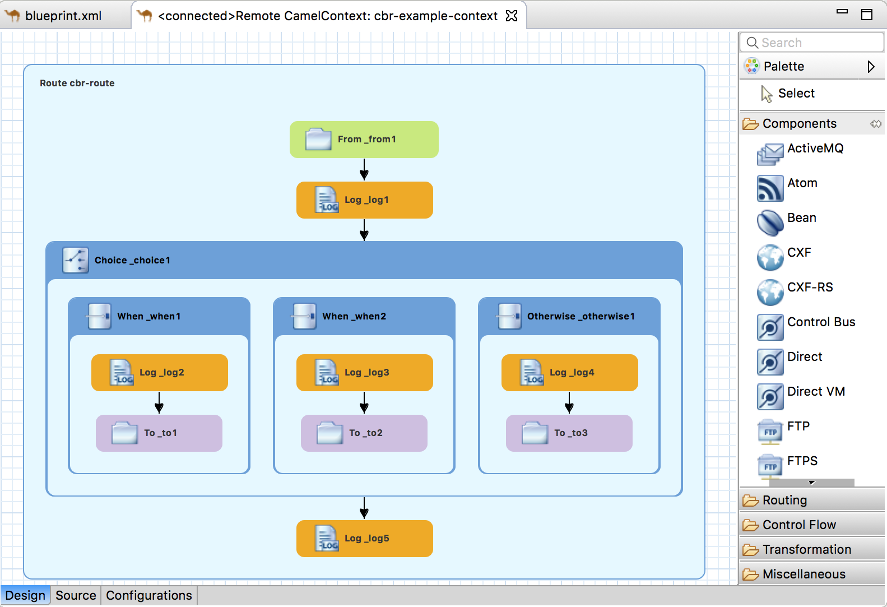

Table of Contents
The JMX Navigator view provides numerous ways to monitor and test your Fuse applications.
![[Note]](imagesdb/note.png) | Note |
|---|---|
You can also monitor your Fuse applications with the Fuse Console as described in Managing Fuse. |
Table of Contents
The JMX Navigator view, shown in Figure 10, “JMX Navigator view”, displays all processes that are running in your application and it drives all interactions with the monitoring and testing features. Other areas of the Fuse Integration perspective adapt to display information related to the node selected in the JMX Navigator view. In the JMX Navigator view, its context menu provides the commands needed to activate route tracing and to add JMS destinations.

By default, the JMX Navigator view discovers all JMX servers running on the local machine and lists them under the following categories:
- Local Processes
- Server Connections
- User-Defined Connections
| Note |
|---|---|
You can add other JMX servers by using a server’s JMX URL. For details, see Adding a JMX server. |
The JMX Navigator view lists all known processes in a series of trees. The root for each tree is a JMX server.
The first tree in the list is a special Local Processes tree that contains all JMX servers that are running on the local machine. You must connect to one of the JMX servers to see the processes it contains.
To view information about processes in a local JMX server:
- In the JMX Navigator view, expand Local Processes.
- Under Local Processes, double-click one of the top-level entries to connect to it.
- Click the
 icon that appears next to the entry to display a list of
its components that are running in the JVM.
icon that appears next to the entry to display a list of
its components that are running in the JVM.
To view information about processes in an alternate JMX server:
- Adding a JMX server the JMX server to the JMX Navigator view.
- In the JMX Navigator view, expand the server’s entry by using
the
icon that appears next to the entry. This displays a list of that JMX
server’s components that are running in the JVM.
In the JMX Navigator view, under the Local Processes branch of the tree, you can see a list of all local JMX servers. You may need to connect to specific JMX servers to see components deployed on other machines.
To add a JMX server, you must know the JMX URL of the server you want to add.
To add a JMX server to the JMX Navigator view:
- In the JMX Navigator view, click New
Connection
 .
. - In the Create a new JMX connection wizard, select Default JMX Connection.
- Click Next.
- Select the Advanced tab.
In the Name field, enter a name for the JMX server.
The name can be any string. It is used to label the entry in the JMX Navigator tree.
- In the JMX URL field, enter the JMX URL of the server.
- If the JMX server requires authentication, enter your user name and password in the Username and Password fields.
Click Finish.
The new JMX server appears as a branch in the User-Defined Connections tree.
The tooling collects all JMX statistics reported by Fuse components and displays them in the Properties view. This statistical information can provide significant insight into what is happening in your integration application.
JMX statistics are grouped into three categories: Properties, Processor, and Profile.
To see a Fuse component’s statistics:
In the JMX Navigator view, locate the node for the component.
You may have to expand nodes on the tree to locate low-level components.
- Select the node of the Fuse component whose statistics you want to review.
- Open the Properties view.
The Properties page displays the JMX properties for the selected component:

Click Processors to check exchange metrics for the selected component:

Click Profile to check message metrics for the selected node and its subnodes:

A key tool in debugging applications in a distributed environment is seeing all of the messages stored in the JMS destinations and route endpoints in the application. The tooling can browse the following:
- JMS destinations
- JMS routing endpoints
- Apache Camel routing endpoints
- SEDA routing endpoints
- Browse routing endpoints
- Mock routing endpoints
- VM routing endpoints
- DataSet routing endpoints
To browse messages:
In the JMX Navigator view, select the JMS destination or endpoint you want to browse.
The list of messages appears in the Messages View.
In the Messages View, select an individual message to inspect.

Message details and content are displayed in the Properties view:

Table of Contents
Debugging a route often involves solving one of two problems:
- A message was improperly transformed.
- A message failed to reach its destination endpoint.
Tracing one or more test messages through the route is the easiest way to discover the source of such problems.
The tooling’s route tracing feature enables you to monitor the path a message takes through a route and see how the message is transformed as it passes from processor to processor.
The Diagram View displays a graphical representation of the route, which enables you to see the path a message takes through it. For each processor in a route, it also displays the average processing time, in milliseconds, for all messages processed since route start-up and the number of messages processed since route start-up.
The Messages View displays the messages processed by a JMS destination or route endpoint selected in the JMX Navigator tree. Selecting an individual message trace in the Messages View displays the full details and content of the message in the Properties view and highlights the correspoding node in the Diagram View.
Tracing messages through a route involves the following steps:
Route tracing works with any kind of message structure. The Fuse
Message wizard creates an empty .xml message, leaving the structuring of
the message entirely up to you.
| Note |
|---|---|
If the folder where you want to store the test messages does not exist, you need to create it before you create the messages. |
To create a new folder:
- In the Project Explorer view, right-click the project root to open the context menu.
Select New → Folder to open the New Folder wizard.
The project root appears in the Enter or select the parent folder field.
- Expand the nodes in the graphical representation of the project’s hierarchy, and select the node you want to be the parent folder.
- In the Folder name field, enter a name for the new folder.
Click Finish.
The new folder appears in the Project Explorer view, under the selected parent folder.
Note If the new folder does not appear, right-click the parent foler and select Refresh.
To create a test message:
- In the Project Explorer view, right-click the project to open the context menu.
- Select New → Fuse Message to open the New File wizard.
- Expand the nodes in the graphical representation of the project’s hierarchy, and select the folder in which you want to store the new test message.
- In the File name field, enter a name for the message, or accept
the default (
message.xml). Click Finish.
The new message opens in the XML editor.
Enter the message contents, both body and header text.
Note You may see the warning,
No grammar constraints (DTD or XML Schema) referenced in the document, depending on the header text you entered. You can safely ignore this warning.
You must activate route tracing for the routing context before you can trace messages through that routing context.
To activate tracing on a routing context:
In the JMX Navigator view, select the running routing context on which you want to start tracing.
Note You can select any route in the context to start tracing on the entire context.
Right-click the selected routing context to open the context menu, and then select Start Tracing to start the trace.
If Stop Tracing Context is enabled on the context menu, then tracing is already active.
The best way to see what is happening in a routing context is to watch what happens to a message at each stop along the way. The tooling provides a mechanism for dropping messages into a running routing context and tracing the path the messages take through it.
To trace messages through a routing context:
- Create one or more test messages as described in Creating test messages for route tracing.
In the Project Explorer view, right-click the project’s Camel context file to open the context menu, and select Run As → Local Camel Context (without Tests).
Note Do not run it as Local Camel Context unless you have created a comprehensive JUnit test for the project.
- Activate tracing for the running routing context as described in Activating route tracing.
- Drag one of the test messages from the Project Explorer view onto the routing context’s starting point in the JMX Navigator view.
In the JMX Navigator view, select the routing context being traced.
The tooling populates the Messages View with message instances that represent the message at each stage in the traced context.
The Diagram View displays a graphical representation of the selected routing context.
In the Messages View, select one of the message instances.
The Properties view displays the details and content of the message instance.
In the Diagram View, the route step corresponding to the selected message instance is highlighted. If the route step is a processing step, the tooling tags the exiting path with timing and processing metrics.
- Repeat this prodedure as needed.
When you are finished debugging the routes in a routing context, you should deactivate tracing.
![[Important]](imagesdb/important.png) | Important |
|---|---|
Deactivating tracing stops tracing and flushes the trace data for all of the routes in the routing context. This means that you cannot review any past tracing sessions. |
To stop tracing for a routing context:
In the JMX Navigator view, select the running routing context for which you want to deactivate tracing.
Note You can select any route in the context to stop tracing for the context.
Right-click the selected routing context to open the context menu, and then select Stop Tracing Context.
If Start Tracing appears on the context menu, tracing is not activated for the routing context.
Table of Contents
The JMX Navigator view lets you add or delete JMS destinations in a running instance of Red Hat Fuse.
| Important |
|---|---|
These changes are not persistent across broker restarts. |
When testing a new scenario, it is convenient to add a new JMS destination to one of your brokers.
To add a JMS destination to a broker:
- In the JMX Navigator view, under the broker node for which you want to add a destination, select either the Queues child or the Topics child.
- Right-click the selected node to open the context menu, and then select either Create Queue or Create Topic.
- In either the Create Queue or Create Topic dialog, enter a name for the new destination.
- Click OK.
Right-click either the Queues or the Topics child, and then select Refresh.
The new destination appears in the JMX Navigator view under the Queues child or the Topics child.
When testing failover scenarios or other scenarios that involve handling failures, it is helpful to be able to easily remove a JMS destination.
To delete a JMS destination:
- In the JMX Navigator view, under the Queues child or the Topics child, select the JMS destination you want to delete.
- Right-click the selected destination to open the context menu, and then select Delete Queue/Topic.
Table of Contents
The JMX Navigator view lets you add or delete routing endpoints.
| Important |
|---|---|
These changes are not persistent across routing context restarts. |
To add an endpoint to a routing context:
- In the JMX Navigator view, under the routing context node, select the Endpoints child to which you want to add an endpoint.
- Right-click the selected node to open the context menu, and then select Create Endpoint.
- In the Create Endpoint dialog, enter a URL that defines the
new endpoint, for example,
file://target/messages/validOrders. - Click OK.
Right-click the routing context node, and select Refresh.
The new destination appears in the JMX Navigator view under the Endpoints node, in a folder that corresponds to the type of endpoint it is, for example, file.
When testing failover scenarios or other scenarios that involve handling failures, it is helpful to be able to remove an endpoint from a routing context.
To delete a routing endpoint:
- In the JMX Navigator view, select the endpoint you want delete.
Right-click the selected endpoint to open the context menu, and then select Delete Endpoint.
The tooling deletes the endpoint.
To remove the deleted endpoint from the view, right-click the Endpoints node, and select Refresh.
The endpoint disappears from the JMX Navigator view.
Note To remove the endpoint’s node from the Project Explorer view without rerunning the project, you need to explicitly delete it by right-clicking the node and selecting Delete. To remove it from view, refresh the project display.
You can experiment with changes to a running route without changing your project’s routing context.
To do so:
In the JMX Navigator view, enable the Edit Routes option on the running routing context.
This opens an in-memory model of it — Remote CamelContext:<camelContextId> — in the route editor.
In the route editor, make your changes to the in-memory model of the routing context. At the same time, you can set breakpoints on relevant nodes to use the Camel debugger and all of its features.
You can edit the in-memory model to add, remove, or rearrange nodes; to add or remove properties of existing nodes; and to modify property values set on existing nodes. You must save changes made to the in-memory model to update the running context and to see results in the Debug perspective if you set breakpoints.
- In the JMX Navigator view, drop messages on the running routing context, or wait for messages to arrive from a timer, ActiveMQ, file, or other continuous input node.
- In the Debug perspective, evaluate results and use the Camel debugger to gain deeper insight into your routing context.
- In the JMX Navigator view, select the routing context that contains the routes you want to edit.
Right-click the selected routing context to open the context menu, and select Edit Routes.
The route editor opens an in-memory model of the routing context, Remote CamelContext:<contextId>, and displays all routes in the context, for example:
Note <contextId>is the ID of thecamelContextelement in the project’s routing context .xmlfile. In this example, which is based on the Fuse → Content Based Router built-in template, the ID iscbr-example-context.- Edit the route as described in Editing a routing context in the route editor, then select File → Save to save the changes you made to the in-memory model and to update the running routing context.
- Set breakpoints on the relevant nodes as described in Setting Breakpoints.
In the JMX Navigator view, drop a message on the running routing context’s input node.
If your project does not include test messages, you can create them as described in Creating test messages for route tracing.
- Click Yes to confirm the switch to the Debug perspective.
In the Camel debugger, step the message through the breakpoints as you normally would (see Running the Camel Debugger) to see the results your changes generated.
The Camel debugger behaves the same in Edit Routes mode as in normal debug mode, so you can use any of the Camel debugger’s features while a message is transiting the routing context.
Note When a message reaches the end of the routing context, the debugger is suspended. To continue debugging, switch back to the Fuse Integration perspective and drop another message on the input node in the JMX Navigator view. Each time you do so, the tooling asks you to confirm the switch to the Debug perspective.
Note During a route editing session, it is possible to lose the connection to the running routing context. If this happens, then in the JMX Navigator view, you would see something like this: Local Processes → maven[xxxx][Disconnected]. To continue the session, you must reconnect to the running routing context, select it in the JMX Navigator view, and then re-select Edit Routes.
- In the Debug perspective’s Debug view, select the
Remote Camel Debug -
camelContext--<contextId>--xxxxxxxxxxxxxxxxxx.xml [Remote Camel
Context] thread, and then click
 on the menu bar to terminate the debugging session.
on the menu bar to terminate the debugging session. - On Console view’s menu bar, click
to terminate the routing context.
- If you want to clear console output, click
 on the Console view’s menu bar.
on the Console view’s menu bar. - Switch to the Fuse Integration perspective, and in the route editor, click on the Remote CamelContext:<contextId> tab to close the in-memory model of the routing context file.
The JMX Navigator view lets you suspend and resume running routing contexts.
The tooling enables you to suspend the operation of a routing context in the JMX Navigator view. Suspending context operation gracefully shuts down all routes in the context, but keeps them loaded in memory, so that they can resume operation.
To suspend operation of a routing context:
- In the JMX Navigator view, expand the project’s Camel Contexts node, and select the routing context whose operation you want to suspend.
Right-click the selected routing context to open the context menu, and then select Suspend Camel Context.
Note If Resume Camel Context appears on the context menu, operation of the context is already suspended.
The tooling lets you resume operation of a suspended routing context in the JMX Navigator view. Resuming operation of a context restarts all of the routes in it so that they can process messages.
To resume operation of a routing context:
- In the JMX Navigator view, expand the project’s Camel Contexts node, and select the routing context whose operation you want to resume.
Right-click the selected context to open the context menu, and then select Resume Camel Context.
Note If Suspend Camel Context appears in the context menu, the context and its routes are running.